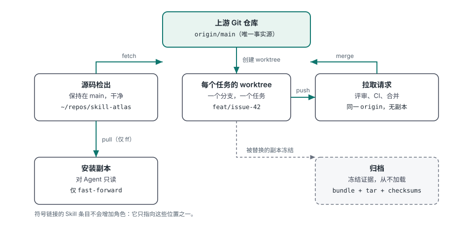
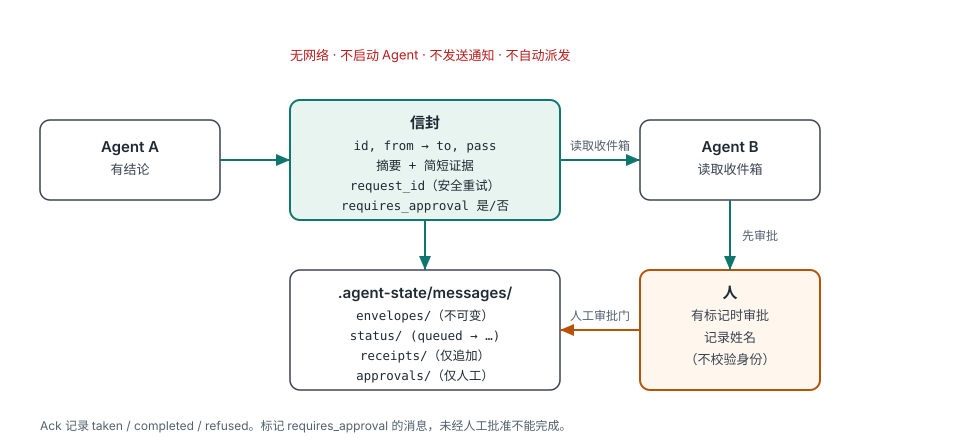
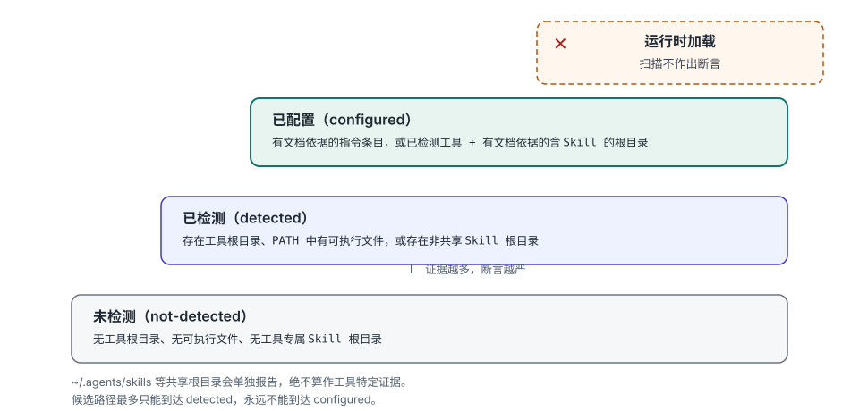

Agent Skill 管理器 · 本地优先 · 默认只读
看清你的 Agent 实际看到了什么。
你的本地 Agent 环境图谱
Skill Atlas 会报告你机器上存在哪些编码 Agent，每个 Agent 从何处加载规则与 Skill， 你本地的 Skill Atlas 副本是否彼此不一致，以及同一个项目是否在多个位置存在且文档已产生差异。 它是一个适用于 Codex、Claude Code、DeepSeek Harness、OpenCode、WorkBuddy、Kimi Code 和其他 Agent 工具的 Skill。
npx skills add Jorgut/skill-atlas为什么会有它
Skill Atlas 源于一次具体的失败，而不是一份功能清单。
版本标签掩盖了三个已合并的 PR
源代码检出与 Agent 实际加载的副本之间相差三个已合并的 PR，
而安装的版本字符串看起来仍然是最新的。agents scan 会比较本地
Skill Atlas 副本并报告 version_mismatch，而不是信任标签。
Agent 各自保留了自己的项目副本
同一个项目存在于多个目录中，每个目录由不同的工具打开。
projects audit 按规范化后的 git remote（已确认）或大小写折叠的目录名（可能）
对疑似重复的副本进行分组。
副本中的文档已经产生差异
AGENTS.md、CLAUDE.md 和状态文件在不同副本之间不一致，
因此 Agent 所认为的内容取决于它打开了哪个检出。审计会计算这些文档的哈希，
并报告哪些副本存在差异，而不打印其内容。
已配置的文件不等于已加载的规则
磁盘上存在某个规则文件，并不能证明 Agent 读取了它。证据阶梯止步于
configured；从不断言运行时加载，且已配置、已加载与交接已验证
始终是彼此独立的声明。
30 秒演示
来自真实运行的截断输出。工具数量、路径和哈希因机器而异。
存在哪些 Agent 工具和 Skill Atlas 副本
python3 scripts/skill_atlas.py agents scan
## Summary
- tools detected: 12
- tools configured: 4
- skill atlas copies: 2
- version mismatch: false项目副本在哪些地方产生了差异
python3 scripts/skill_atlas.py projects audit \
--project ~/repos/widgets --project ~/worktrees/widgets-review
## Duplicate groups
### `git-remote:github.com/example/widgets` (git-remote)
- divergent docs:
- AGENTS.md (2 distinct hashes)
- canonical candidate: `/home/you/repos/widgets`
- requires user confirmation: true留下带回执的交接消息
python3 scripts/skill_atlas.py message send --project . --task issue-28 \
--from Codex --to "Claude Code" --summary "Review the camera diff" \
--requires-approval
# Agent message: queued
- state: queued
- approval: pending
- note: Local file transport only; the receiving agent has not been notified工作原理
三张图说明了整个模型。没有第二个事实源，没有隐藏状态。



configured。
阅读扫描指南。它做什么，不做什么
边界是产品的一部分，而不是免责声明。
| 它会报告和规划 | 它拒绝做的事 |
|---|---|
| 哪些 Agent 工具会在本地留下证据，以及它们指向哪些规则根目录和 Skill 根目录 | 默认情况下经由网络发送任何内容；公开搜索仅在显式选项和已配置的访问权限下运行 |
| Skill Atlas 副本位于何处，以及它们的版本、别名和不匹配标记 | 信任版本标签，或声称 Agent 加载了它并未加载的副本 |
| 项目副本位于何处、哪些看起来重复，以及哪些文档存在差异 | 打印、存储或比较这些项目文档的内容 |
| Skill 清单、重复项、更新与整合计划 | 执行 Agent 工具、运行第三方代码或启动另一个 Agent |
| 基于共享评分标准给出的 Skill、模型和工具推荐 | 编造基准测试、价格、可用性或永久性的模型排名 |
| 可选的本地交接消息，带有回执和人工审批门 | 自动移动、合并、归档或删除文件 |
从这里开始
详细文档位于仓库中；每个页面都会说明自身的限制。